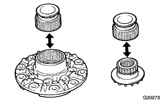
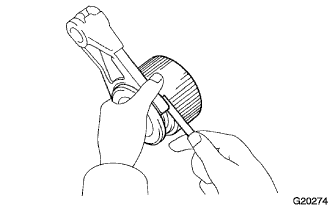

ЧАШКА ЗАДНЕГО ДИФФЕРЕНЦИАЛА В СБОРЕ (для моделей с блокировкой дифференциала) > ПРОВЕРКА |
| 1. УСТАНОВИТЕ ВТУЛКУ БЛОКИРОВКИ ЗАДНЕГО ДИФФЕРЕНЦИАЛА |
|  |
Установите втулку на корпус дифференциала (левый) и убедитесь, что она движется плавно.
Установите на втулку полуосевую шестерню и убедитесь, что она движется плавно.
|  |
Используя комплект плоских щупов, измерьте зазор между вилкой переключения и втулкой.
| 2. ПРОВЕРЬТЕ ВЕДУЩУЮ И ПОЛУОСЕВУЮ ШЕСТЕРНИ ДИФФЕРЕНЦИАЛА |
Убедитесь в том, что ведущая и полуосевая шестерни дифференциала не повреждены.
Если ведущая или полуосевая шестерня дифференциала повреждена, замените дифференциал.
| 3. ПРОВЕРЬТЕ КОРПУС ДИФФЕРЕНЦИАЛА |
Удостоверьтесь, что корпус дифференциала не поврежден.
Если корпус дифференциала поврежден, замените его.